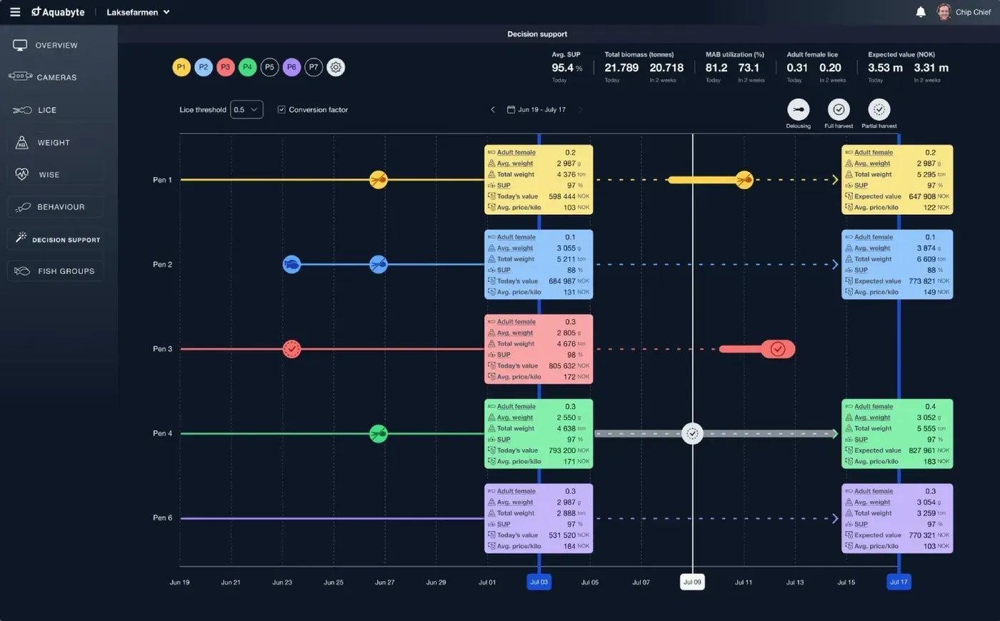

Forside/Om
Om Aquabyte
Aquabyte ble grunnlagt i 2017 med en klar visjon: å gi oppdrettsnæringen presise data fra merden. I dag er over 800 systemer i drift.

Selskapet
Fra innovatør til markedsleder
Aquabyte leverer datadrevet beslutningsstøtte for oppdrettsnæringen, med kontor i Laksevåg i Bergen.
- Grunnlagt i 2017.
- Over 800 systemer i merder.
- Åtte år med datainnsamling.
- Eget team for customer success og innsikt.
1,3 mill.Bilder per kamera, hver dag
800+Systemer i merder
8 årMed datainnsamling
2017Grunnlagt
Vil du vite mer?
Ta kontakt med salgsteamet i Bergen.